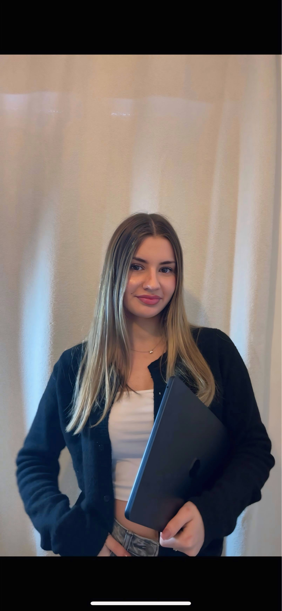

Actuellement en BUT Métiers du Multimédia et de l’Internet, je recherche un stage de 4 semaines, du 1er au 26 juin 2026, pour mettre ma polyvalence technique et stratégique au service de vos projets.
Instagram, TikTok, Facebook, LinkedIn
Photoshop, Illustrator, Canva, InDesign
Première Pro, Capcut
Html, Css, Php, Figma, Wordpress
Présentation de mon profil.
Détails : Réalisation d'un CV vidéo dynamique pour mettre en avant ma créativité, mes compétences techniques et ma personnalité. Un format court conçu pour capter l'attention des recruteurs dès les premières secondes.
Visuels pour YouTube.
Détails : La conception repose sur deux approches visuelles :
Campagnes de santé et vie de l'hôpital.
Détails : Rédaction d’une série de communiqués de presse pour le CHU de Montpellier :
Logotype du pôle SPES.
Détails : Une identité riche et protectrice, conçue pour fusionner les trois missions du service :
Affiche sur les droits d'accès des patients.
Détails : Affiche conçue pour informer les patients sur leurs droits d'accès au dossier médical. L'enjeu principal était de hiérarchiser les informations essentielles pour une lecture rapide et accessible.
Le métier de chargé de communication.
Détails : Réalisation d'une interview d'un chargé de communication en alternance au Club de Rugby Nîmois, afin de mettre en lumière les missions concrètes du métier en entreprise.
Livret d'accueil pour la rentrée au collège.
Détails : Création d’un document attractif et structuré en utilisant des illustrations colorées et une mise en page aérée. Ce guide rassure les futurs élèves tout en valorisant l'image moderne de l'établissement.
Campagne digitale pour concilier sport et alimentation saine.
Détails : Ce projet a nécessité une stratégie complète : étude de rentabilité (150 abonnés), gestion logistique des produits périssables et lancement via une campagne de crowdfunding.
Visuels de couverture et d'introduction pour les conférences YouTube.
Détails : Création des visuels d'introduction pour les conférences filmées.
Travail sur la typographie et les textures pour une illustration au style vintage.
Détails : Travail explorant le graphisme créatif où le mélange des formes et des lignes crée un rythme visuel dynamique pour un rendu vintage.
Respect, entraide et valeurs humaines.
Détails : Conception d'une affiche graphique visant à valoriser la cohésion d'équipe plutôt que la compétition.
Site de Pokémon.
Détails : Projet visant à produire efficacement un grand nombre de pages web valides et accessibles. L'objectif était d'automatiser l'intégration pour générer une bibliothèque complète de Pokémon, incluant des systèmes de filtrage par type et une navigation structurée par fiche individuelle.
Site dynamique type "AlloCiné" avec gestion de base de données.
Détails : Réalisation d'une plateforme web permettant la gestion interactive d'une bibliothèque cinématographique. Le projet intègre :
{kind=link}
{kind=link}
{kind=link}
{kind=link}
{kind=link}
{kind=link}
{kind=link}
{kind=link}